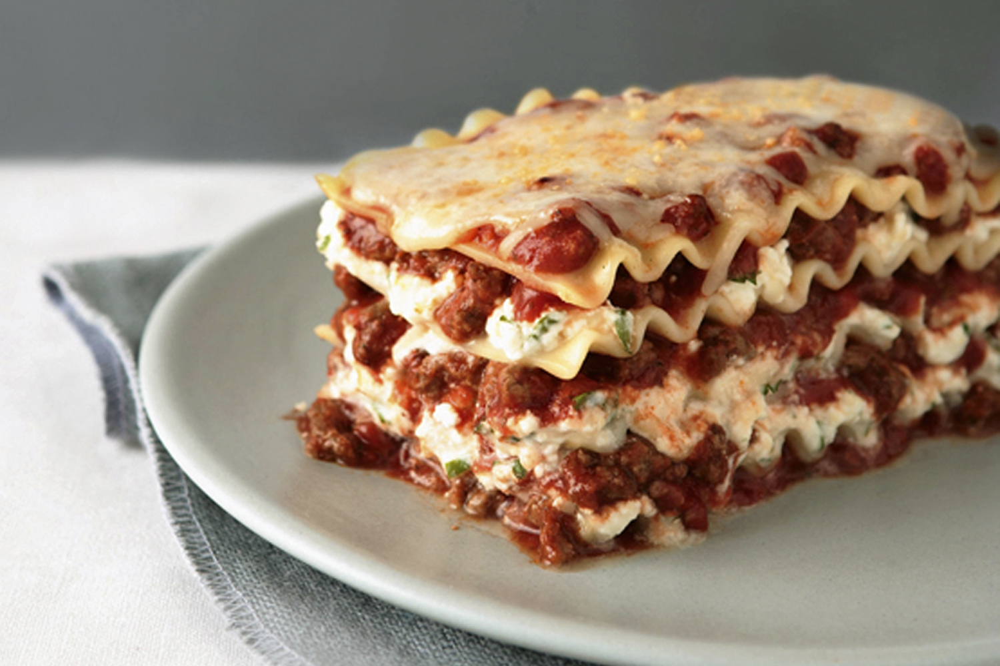

Go to Home Page
Lasagna

Home Made Lasanga
Lassanga is a classic that every cook should have in their rotation. Tender sheets of pasta, a cheese filling, and a rich meaty tomato sauce make the perfect dish!
While there are a few steps to this recipe, it’s easy to make and has huge flavor. This dish can be made ahead of time and freezes well either before or after baking!
Ingredients
- 1 pound sweet Italian sausage
- ¾ pound lean ground beef
- ½ cup minced onion
- 2 cloves garlic, crushed
- 1 (28 ounce) can crushed tomatoes
- 2 (6 ounce) cans tomato paste
- 2 (6.5 ounce) cans canned tomato sauce
- ½ cup water
- 2 tablespoons white sugar
- ...Many more
Steps
- Spread about a cup of meat sauce into a 9×13 pan. Add a layer of noodles
- Top the noodles with some of the cheese mixture
- Repeat the layers, ending with a layer of noodles and sauce
- Cover with foil and bake
- Remove foil, top with mozzarella and parmesan and bake another 15 minutes
- ...Many more